Explore Rotterdam
A Brief History
Rotterdam rebuilt after 1940 bombing into Europe's largest port, with modernist bridges, cube houses, and maritime museums on the Maas River. Medieval Delfshaven survives as a reminder of Pilgrim embarkation and pre-war harbour life in South Holland. Euromast views and Erasmus Bridge spans extend rebuilt harbour districts across the Maas delta. Walking routes through the historic centre help visitors relate these monuments to wider patterns of settlement and civic life in Netherlands.
Attractions Map
Top Sights & Activities
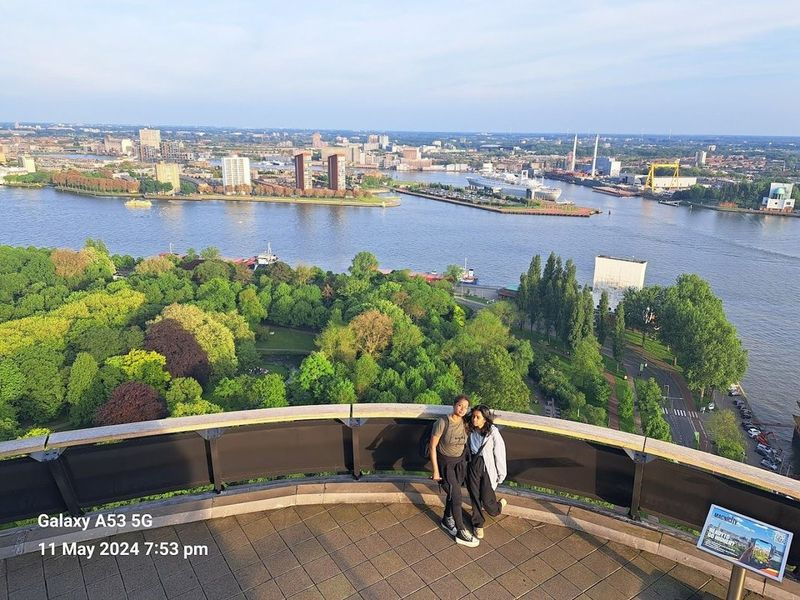
Euromast
Euromast is a must-visit TV tower in Rotterdam, offering 360-degree views of the city. It features dining options and two luxurious suites, as well as thrilling activities like abseiling and a zipline. The tour around Euromast includes exploring various residential typologies, IT and media compounds, educational facilities, and sustainable projects such as the SAWA housing tower.
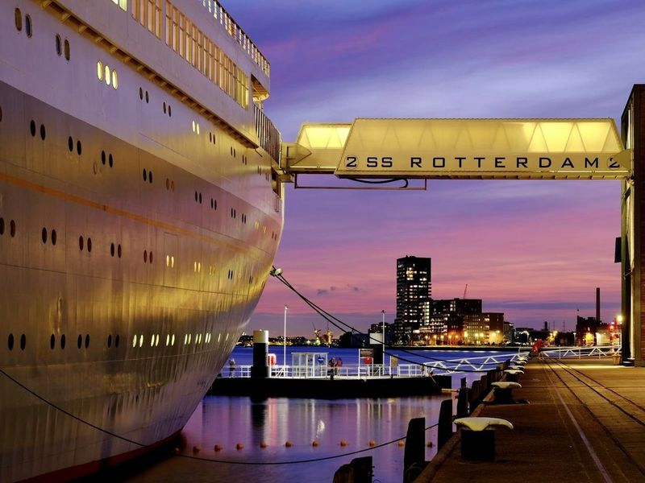
SS Rotterdam
The S.S. Rotterdam offers a unique experience as a hotel, restaurant, and tourist attraction all in one. This former cruise ship turned hotel provides colorful rooms, free breakfast, and an outdoor pool for guests to enjoy. Visitors can book tickets for a dinnertime cruise on the pancake boat to get an overview of the city and its port. The Museum Rotterdam offers insight into the city's history with a one-hour overview.
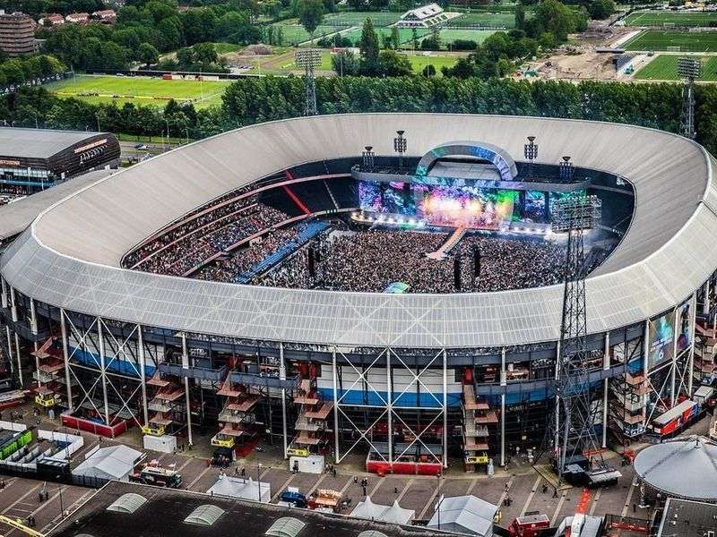
Feyenoord Stadium (De Kuip)
Feyenoord Stadium, also known as De Kuip, is a 51,000-seat multi-purpose stadium located in Rotterdam. It serves as the current home to Feyenoord FC and has been a venue for rock concerts. The stadium offers tours that allow visitors to get close to the pitch, visit the changing rooms, and explore the museum showcasing European cups and Dutch championships won by Feyenoord.
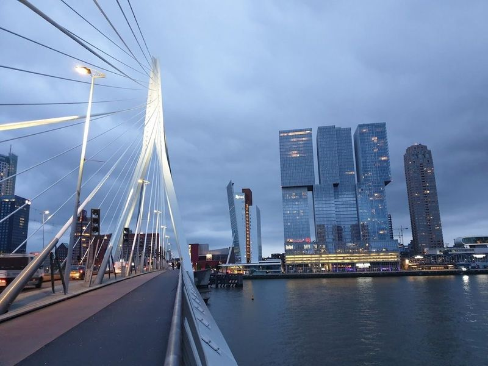
Erasmusbrug
Erasmusbrug, also known as "The Swan," is a modern suspension bridge in Rotterdam designed by Ben van Berkel and opened in 1996. It spans the Nieuwe Maas River, connecting the northern and southern parts of the city. The bridge has become an symbol of Rotterdam's skyline and has been featured in various events such as the start of the Tour de France and Red Bull Air races.
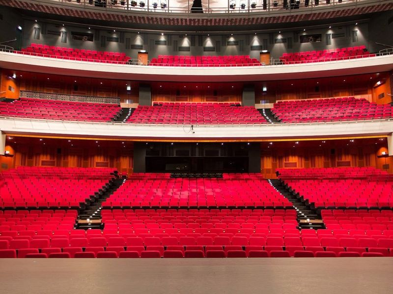
Nieuwe Luxor Theater
The Nieuwe Luxor Theater in Rotterdam was built as a result of an architectural competition held by the Rotterdams Luxor Theater in 1996. The winning design successfully combines traditional cinema architecture with modern structural elements. It is known for hosting musicals, cabaret, opera, and shows. The theater offers comfortable seating with great views from almost every angle and convenient facilities and bars.
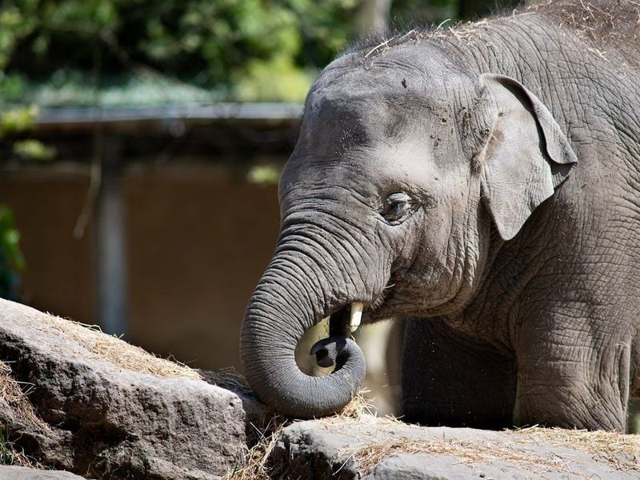
Rotterdam Zoo
Rotterdam Zoo, also known as Diergaarde Blijdorp, is a historic zoo established in 1857 and renowned for its successful breeding programs. The zoo features diverse themed areas such as the Asian section with a swamp forest and large aviaries, a Mongolian steppe, a bat cave, and a Chinese garden. Visitors can observe various wildlife including rhinos, lions, tigers, giraffes, gorillas, polar bears, penguins and elephants.
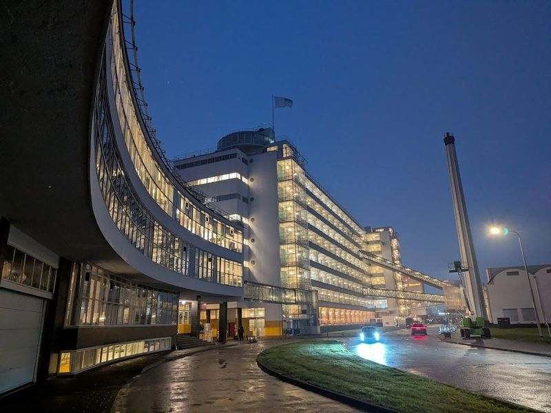
Van Nelle Factory BV
The Van Nelle Factory BV is a modernist 1930s factory in Rotterdam that has been transformed into an arts hub, housing creative companies and serving as an event venue. During Rotterdam Art Week, the city comes alive with major art and design fairs like Art Rotterdam and Object Rotterdam, attracting numerous art enthusiasts. The factory, originally a tobacco factory, is considered a pinnacle of Dutch industrial heritage and was designated as a UNESCO World Heritage site in 2014.
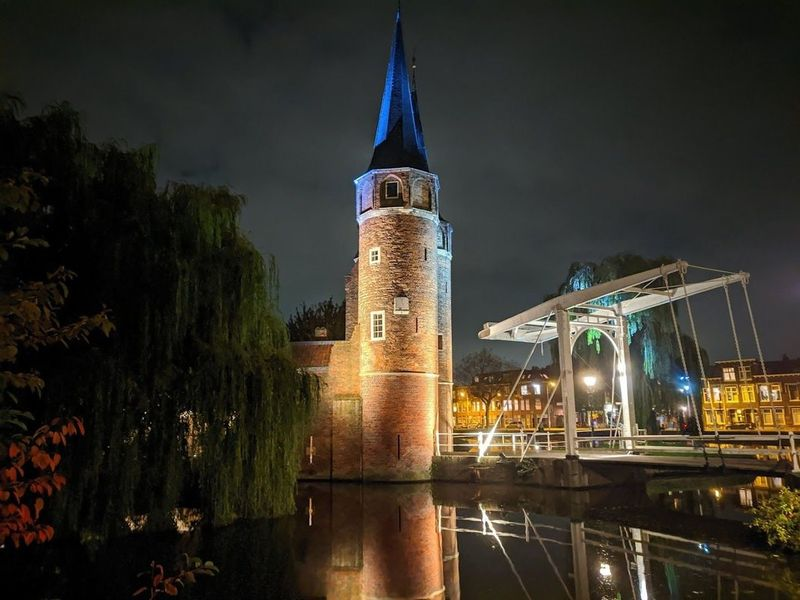
Oostpoort
Oostpoort, also known as the Eastern Gate, is a picturesque riverside landmark in Delft that dates back to the 15th and 16th centuries. This Gothic-style city gate features twin spires and a brick archway, giving it the appearance of a small castle. It is the only remaining entrance from the old city wall and offers views of the surrounding canals.
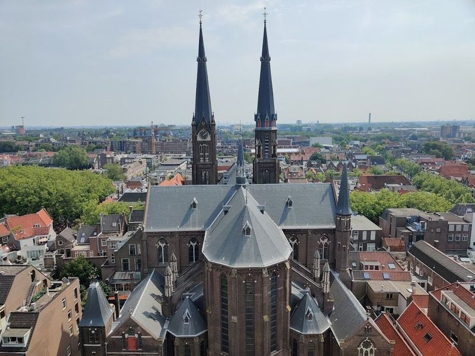
Nieuwe Church
Nieuwe Church, located in Delft, is a Protestant place of worship constructed in the shape of a cross. It was built over several centuries and features a crypt that houses royal tombs, including that of William of Orange. The church's 109-meter tower offers panoramic views but is not accessible to children under five due to its 376 narrow, spiraling steps.
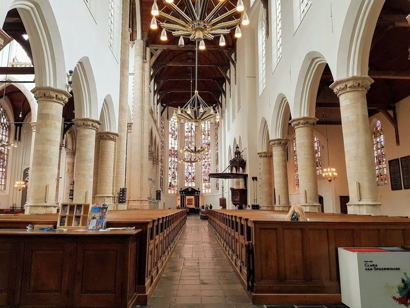
Old Church
The Old Church, also known as Oude Kerk, is a 13th-century church located along the banks of the old Oude Delft canal in Delft, Holland. It is renowned for its 75-meter-tall leaning brick tower and a 9-tonne bell. The church has undergone several enlargements and renovations over the years to accommodate a growing number of worshippers.
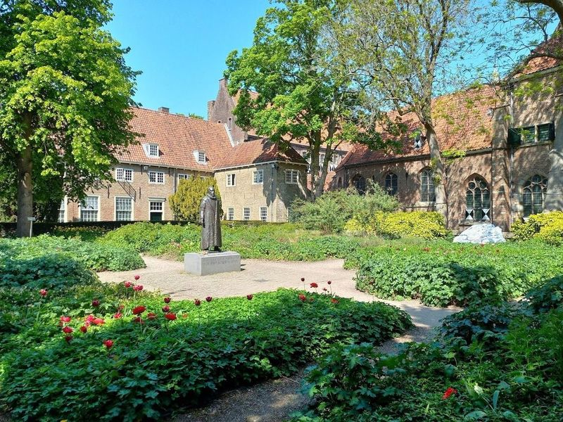
Museum Prinsenhof Delft
Museum Prinsenhof Delft, once a convent of St. Agatha, holds great historical significance as the former residence of Prince William the Silent, a key figure in the creation of the Dutch Republic. The museum showcases 17th-century arts and crafts alongside exhibits on William's role in the Spanish Revolt. The tragic event that took place here, where William was assassinated by Balthasar Gerard in 1584, is commemorated throughout the museum.
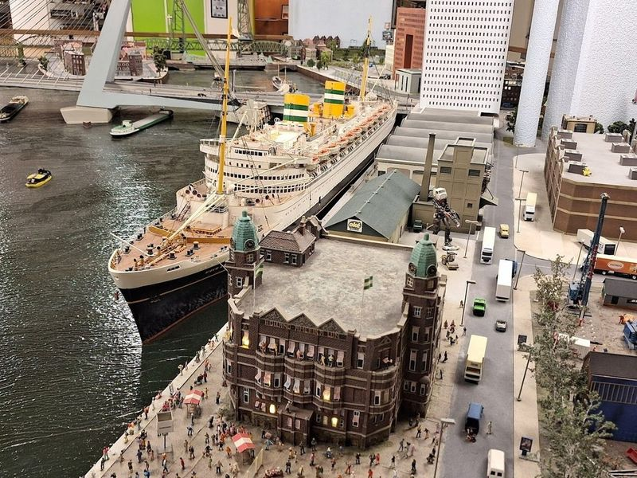
Miniworld Rotterdam
Miniworld Rotterdam is a captivating attraction housed in a spacious warehouse, spanning over 535 square meters. It features an intricate miniature model of Rotterdam, complete with day and night simulations. The exhibit showcases famous landmarks and attractions of the Netherlands on a small scale, including a detailed replica of the Rotterdam Port and Water Port. Visitors can marvel at the 2.
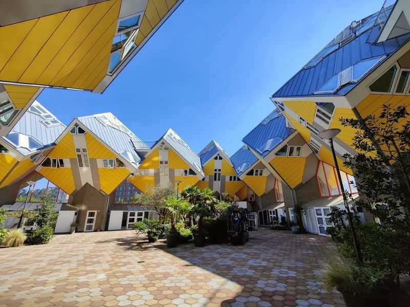
Kijk-Kubus Museum-house
The Kijk-Kubus Museum-house is a fascinating destination in Rotterdam that showcases the innovative design of architect Piet Blom's cube houses. This unique museum offers visitors an immersive experience, allowing them to step inside one of these distinctive homes and explore their layout, purpose, and historical significance. While many cube houses are privately owned, the Kijk-Kubus stands out as a public space dedicated to celebrating this architectural marvel.
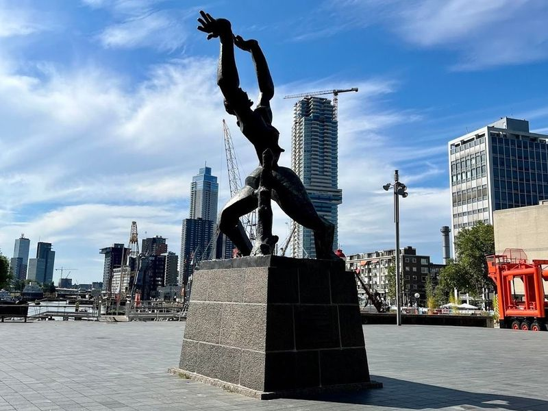
statue The Destroyed City by Ossip Zadkine
"The Destroyed City" is a striking bronze monument and war memorial in Rotterdam, created by the renowned artist Ossip Zadkine. It symbolizes the city's devastation during World War II when it was severely damaged by German forces. The sculpture serves as a fitting tribute to the resilience of Rotterdam, which rebuilt itself after the devastating Blitz. Visitors are encouraged to explore nearby landmarks such as Markthal and Marathonbeeld before concluding their tour at this powerful monument.
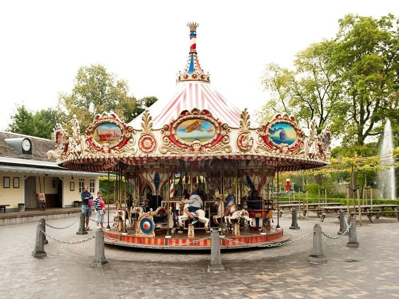
Plaswijckpark
Plaswijckpark is a delightful family park located just an 8-minute drive from Rotterdam's city center. It offers a range of attractions including an adventure playground, boat and train trips, as well as a zoo featuring monkeys and wallabies. The park also boasts a theater, gentle mechanical games in the playground, and nature paths for hiking. Families can enjoy a meal at the on-site restaurant which offers a variety of dishes catering to both adults and children.